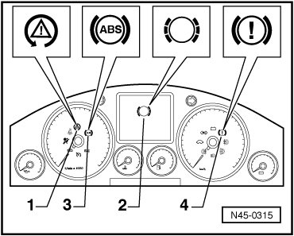
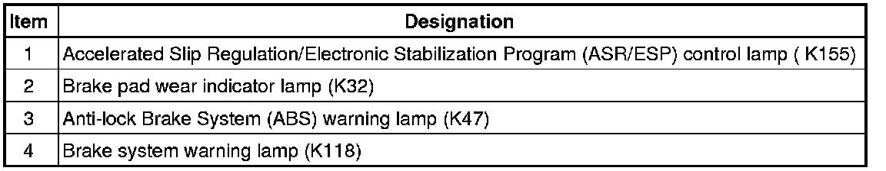

Initial Inspection and Diagnostic Overview
Level Control System Indicator Lamps
Warning Lamps


ABS Warning Lamp (K47)
• If ABS warning lamp (K47) - 3 - does not go out after the ignition is switched on and the test sequence is complete, it could be caused by the following errors:
a Voltage supply is below 10 Volt
b There is a malfunction in the ABS
The ABS system remains switched off during an ABS malfunction - b -, but the traditional brake system remains fully functional.
c Since the last time the vehicle was started there was a temporary speed sensor malfunction.
In this case the ABS warning lamp (K47) will go out after the engine is restarted and the vehicle speed exceeds 2.75 km/h.
d The connection from instrument cluster to ABS control module (w/Electronic Differential Lock (EDL) (J104) is interrupted.
e ABS warning lamp (K47) is faulty.
ABS warning lamp (K47) and brake system warning lamp (K118).
• If ABS warning lamp (K47) - 3 - goes out but brake system warning lamp (K118) - 4 - lights up, the malfunctions causes may be:
a the brake fluid level is too low.
Three warning tones are audible after switching on the ignition.
b There is a malfunction in the wiring to warning light for brake system (K118).
• If ABS warning lamp (K47) - 3 - and brake system warning lamp (K118) - 4 - lights up, ABS system is malfunctioning. A change in braking behavior should be checked.
CAUTION!
After ABS warning lamp (K47) and brake system warning lamp (K118) light up, rear wheels may lock prematurely when braking.
ASR/ESP Control Lamp (K155)
• If the ASR/ESP control lamp (K155) - 1 - does not turn off after the ignition is switched on and the test sequence is completed, the malfunction may be:
There is a malfunction present which only affects the ASR/ESP. The ABS/EDL and Electronic Brake pressure Distribution (EBD) safety systems are still completely functional, check Diagnostic Trouble Code (DTC) memory.
a Short circuit to B+ in the ASR/ESP button.
b a short circuit to ground in ASR/ESP control lamp (K155) activation.
c The connection from instrument cluster to contact 31 of ABS control module (J104) is interrupted.
d ASR/ESP was switched off by the ASR/ESP button (E256).
If the ASR/ESP control lamp (K155) blinks while driving, the ASR or ESP system is in regulating mode.
• If the ASR/ESP control lamp (K155) - 1 - did not light up during self test, the following malfunction is present:
a ASR/ESP control lamp (K155) is faulty, perform electrical test.
ABS warning lamp (K47) and ASR/ESP control lamp (K155)
• If the ABS warning light (K47) - 3 - and the ASR/ESP control lamp (K155) - 1 - do not turn off after the ignition is switched on and the test sequence is completed, the malfunction may be:
a The voltage supply for the ABS system is below 10 volts and the vehicle speed is less than 12 km/h, Perform electrical test.
b a short circuit to positive in ASR/ESP control lamp (K155) activation.
Short circuit to B+ in ASR/ESP button (E256).
ABS warning lamp (K47), brake system warning lamp (K118) and ASR/ESP control lamp (K155)
• If ABS warning lamp (K47) - 3 -, ASR/ESP control lamp (K155), - 1 - and brake system warning lamp (K118) - 4 - do not go out, malfunction causes may be:
a The voltage supply for the ABS system is below 10 volts and the vehicle speed is less than 12 km/h, Perform electrical test.
b There is a malfunction in the hydraulic control module; ABS system is therefore not operating.
A change in braking behavior should be checked. The rear wheels can lock up early when braking!
c There was a dynamic wheel speed sensor malfunction during the last driving period.
In this case, the warning lamps automatically switch off after a new vehicle start once a speed of 2.75 km/h is exceeded. This requires that the malfunction does not occur again after the repair work and new test are performed.
Brake System Warning Lamp (K118)
• If the warning light for brake system (K118) - 4 - does not go out after switching the ignition on, the malfunction may be:
a Foot operated parking brake is engaged.
Switch for brake system warning lamp (K118) is malfunctioning or incorrectly adjusted.
There is a malfunction in the wire routing, Perform electrical test.
The parking brake switch also informs the ABS control module (w/EDL) (J104) whether the parking brake is set or not. When the parking brake pedal is set, the ESP control is negatively influenced.
Brake Pad Wear Indicator Lamp (K32)
• If brake pad wear indicator lamp (K32) - 2 - does not switch off 3 seconds after the ignition is switched on or if it lights up when vehicle is driven, it could be caused by the following malfunctions:
a the brake pads are worn.
Check front and rear axle brake pads/linings. Replace worn brake pads/linings.
b There is a malfunction in the wire routing.